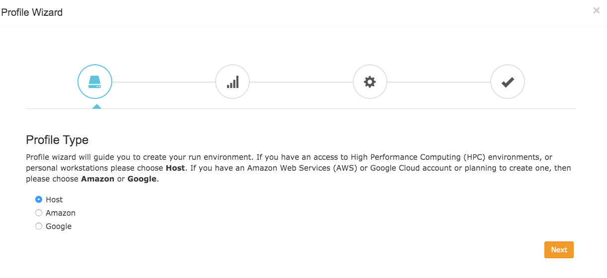

Quick Start Guide¶
Signing Up¶
This guide will walk you through how to start using DolphinNext pipelines. First off, you need to enter DolphinNext web page: https://dolphinnext.umassmed.edu/ and click Sign Up or Sign in with Google buttons. You will be asked to enter your institute information. An email will be sent to you upon verification of your information.

Creating Profile¶
Once you enter DolphinNext platform, Profile Wizard will open as shown at below.
{kind=link}
Note
If you need to re-open wizard window, you can simply click wizard button at the top right.

Note
If you have any issues/questions about creating profiles please contact us on: support@dolphinnext.com
First, choose your profile type:
- If you have an access to High Performance Computing (HPC) environments, or personal workstations, then please choose Host.
- If you have an Amazon Web Services (AWS) account or planning to create one, then please choose Amazon and follow our Amazon Guide to create your run environment.
- If you have an Google Cloud account or planning to create one, then please choose Google and follow our Google Guide to create your run environment.
- If you choose MGHPCC cluster option, you can upload your files to our MGHPCC cluster to process your data and download your results from report section. However, you will not have direct access to our cluster.
Note
If you choose MGHPCC option, you can skip the rest of this guideline and go to Running Pipelines Section.
Second, add public SSH Key into your host machine.
- Please confirm our Terms and Conditions & Privacy Policy by clicking checkbox.
- Here, public key is securely generated for your account and required to be added into
~/.ssh/authorized_keysin the host by user. Please check our Adding Public SSH Key Section for help. - After adding public key, please click Validate SSH Keys button to finalize this section.
Important
Username/Hostname: You should enter your username and hostname of the host which you would like to connect (yourusername@yourhostname). For instance, for us2r@ghpcc06.umassrc.org:
* Username: yourusername (eg. us2r)
* Hostname: yourhostname (eg. ghpcc06.umassrc.org)
- Third, install/validate software dependencies into the host machine.
In order to execute our pipelines, Nextflow should be installed into your host environment. Besides, most of our pipelines isolates their dependencies within their Docker or Singularity containers, therefore please install these softwares into your machine by following guidelines. If your platform doesn’t support the installation of Docker, you can still use our pipelines by just using Singularity.
- Installing Nextflow
- Installing Singularity (Version 3)
- Installing Docker
Sofware Dependencies Section:
- JAVA Command (optional): If JAVA is not added to $PATH environment, you can run command (eg.
module load java/8.0) to manipulate your $PATH environment and gain access to JAVA.- Nextflow Path or Command (optional): If nextflow is not added to $PATH environment, you can either enter the path of the nextflow (eg.
/project/bin), or run command (eg.module load nextflow) to manipulate your $PATH environment and gain access to new softwares.- Docker/Singularity Command (optional): You can run command to manipulate your $PATH environment in order to gain access to new softwares. (eg.
module load docker/1.0.0ormodule load singularity/3.0.0)
General run settings could be set in following Run settings section:
- Executor of Nextflow: Nextflow itself is initiated with this method and it will be only used for running nextflow itself.
- Executor of Nextflow Jobs: This setting will be used as default setting for submitted jobs by Nextflow.
- Download Directory: Used to download shared pipeline files such as genome indexes. If your platform has already such path, please enter that location. Otherwise you can set any path that you have permission to write. e.g.
/share/dolphinnext/downloads
Once you complete these steps, you’re now able to start using publicly available pipelines.
Running Pipelines¶
The easiest way to run pipeline is using main page by clicking the Biocore DolphinNext button at the top left of the screen. Now, you can investigate publicly available pipelines as shown at below and select the pipeline you want run by clicking Learn More button.

Once pipeline is loaded, you will notice “Run” button at the right top of the page.

This button opens new window where you can create new project by clicking “Create a Project” button. After entering and saving the name of the project, it will be added to your project list. Now you can select your project by clicking on the project as shown in the figure below.

Now, you may proceed with entering run name which will be added to your run list of the project. Clicking “Save run” will redirect to “run page”.
Initially, in the header of the run page, orange
Waitingbutton will be shown. In order to initiate run, following data need to be entered:
Work Directory: Full path of the directory, where nextflow runs will be executed.
Run Environment: Profile that is created in the profile page. If Amazon profile or Google profile is selected, then status of the profile should to be at the stage of running.

Inputs: Value and path of the files need to be entered. For detailed information please check adding files section.

Once all requirements are satisfied,
Waitingbutton will turn in to greenready to runbutton as shown below. You can initiate your run by clickingready to runbutton. Please go through run page for detailed explanation about each module is used.
{kind=link}
Adding Files¶
Remote Files¶
You can reach your remote files by entering:
- Full path of a directory: eg.
/share/data/umw_biocore/genome_data/mousetest/mm10/gz- Web link: eg.
https://galaxyweb.umassmed.edu/pub/dnext_data/test/reads- Amazon (S3) Bucket: eg.
s3://biocore/fastq- Google (GS) Bucket: eg.
gs://biocore/fastq
Geo Files¶
If you want to download and use NCBI (GEO data) in the pipeline, you can simply use GEO Files tab. Here are the few examples for GEO ID: GSM1331276, GSE55190, SRR10095965
Upload Files¶
If you need to upload your local files and transfer into Target Directory in the Host, you can use Upload Files tab.
For detailed information about adding files, please check our tutorial video:
How To Cite Us¶
If you use DolphinNext in your research, please cite:
Yukselen, O., Turkyilmaz, O., Ozturk, A.R. et al. DolphinNext: a distributed data processing platform for high throughput genomics. BMC Genomics 21, 310 (2020). https://doi.org/10.1186/s12864-020-6714-x